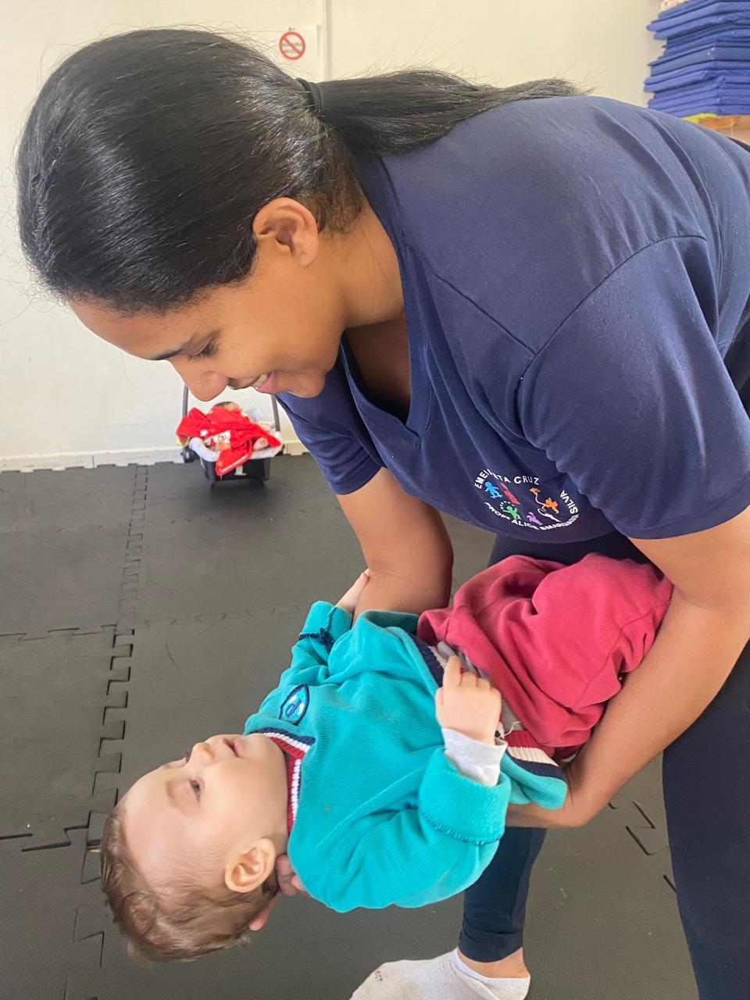
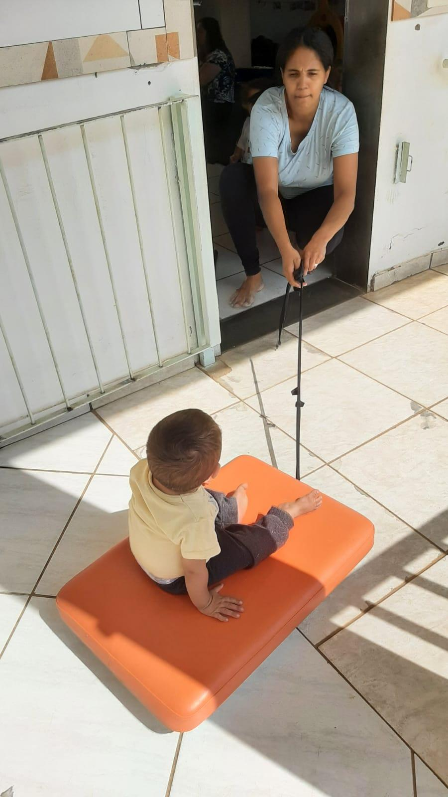
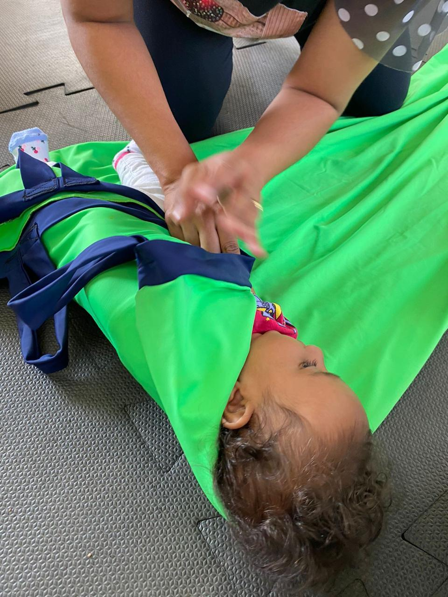

Na primeira infância, já nos primeiros anos, o cérebro humano se desenvolve em um ritmo admirável e precoce se comparado a qualquer outro momento da vida, pois os caminhos cerebrais estão abertos e devem ser estimulados. Essas estimulações, principalmente com os bebês, fazem parte do aprendizado sensorial que é um aspecto importante e necessário da educação infantil, pois leva ao amadurecimento do sistema neurológico.
Portanto, a sequência de experiências sensoriais faz-se necessária e importante na faixa etária do G1, pois sabemos que as crianças se encontram na fase do sensório-motor na qual forma-se a base para novas aprendizagens ao longo da vida.
Essa fase é caracterizada pelas descobertas por meio das sensações e dos movimentos. Para tanto, os cincos sentidos, na maioria das vezes, são utilizados por nós professores nas propostas e contextos planejados durante o ano escolar. Mas, será que as crianças desenvolvem-se apenas por meio destes cinco sentidos? Estudos recentes trazem à reflexão a existência de outros sentidos que contribuem para o desenvolvimento das crianças.
O sexto e o sétimo sentidos são pouco conhecidos no espaço escolar, principalmente, na relação com crianças. Eles são denominados por: sistema vestibular e sistema proprioceptivo. Resumidamente, o sistema vestibular é mais conhecido como senso de equilíbrio, trata-se da percepção que temos em relação à gravidade, movimento e equilíbrio. E o sistema proprioceptivo refere-se a senso de espaço e de posição, ou seja, faz parte do sensorial, onde conseguimos perceber a localização, a força dos músculos, orientação do corpo no espaço e a posição de cada parte do corpo e está intrínseco com o tato.
Sendo assim, a sequência de experiência pretende de forma consciente estimular e elaborar propostas que envolvam esses dois sistemas para contribuir com um desenvolvimento integral dos bebês, sem perder essa janela de oportunidade no desenvolvimento dos pequenos.
Objetivo
Geral: Temos como objetivo geral: estimular o sistema vestibular e proprioceptivo por meio de brincadeiras.
Específicos:
(EI01EO02) - Perceber as possibilidades e os limites de seu corpo nas brincadeiras e interações das quais participa.
(EI01EO05X) - Reconhecer seu corpo e expressar suas sensações em momentos de brincadeiras.
(EI01CG02) - Experimentar as possibilidades corporais nas brincadeiras e interações em ambientes acolhedores e desafiantes, percebendo seus limites e potencialidades.
(EI01EF06) - Comunicar-se com outras pessoas usando movimentos, gestos, balbucios, fala e outras formas de expressão.
Desenvolvimento
A seguir será descrita uma lista de experiências que favorecem o desenvolvimento dos sistemas vestibular e proprioceptivo e que foram aplicadas com a turma de crianças de G1B, na EMEI Alice Smargiassi Silva, neste ano de 2024:
Montanha Russa: Experimentar as possibilidades corporais nas brincadeiras. Para subir na montanha, é necessário a ativação do sistema proprioceptivo, uma vez que as crianças precisam de força e tônus muscular, estabilização articular e percepção corporal para chegar ao topo.
Dança virada: De cabeça para baixo com segurança, segurar o bebê, incliná-lo para baixo e dançar "ciranda dos bichos". Ao balançar as crianças observei que elas expressaram diferentes sensações. Ao balançar a cabeça, estimula o sistema vestibular.
Sanduíche de helanca: Enrolar a criança no tecido helanca e rolar. Nessa proposta trabalhamos o sistema proprioceptivo e tato pressão.
Túnel: Estimulação realizada a partir do próprio corpo no espaço. Alguns bebês de forma nenhuma aceitaram perpassar pelo túnel, mas aqueles que aceitaram, fizeram com entusiasmo e alegria, explorando seus sentidos.
Cataratas do Iguaçu: Utilizamos uma bacia e a rampa do corredor. Foram explorados o sistema proprioceptivo dos pequenos.
Balanço do mar: Utilizamos uma rede de descanso e colocamos os bebês deitados para balançar, estimulando o sistema proprioceptivo.
Skate: Brincadeira que trabalhou o sistema vestibular, gerando muitas risadas e disputa pela vez.
Bambolê sensorial: Brinquedo encapado com fitas e tecidos de diferentes texturas, pendurado com objetos sonoros. Coloca-se o bebê dentro dele estimulando seu corpo no espaço, propriocepção.
Dia da família na escola: Explicamos para a família sobre nossa sequência de experiências, a fase sensorial, e construímos juntos brinquedos sensoriais não estruturados para estimulação e brincadeiras com os bebês.
Fala mestre: Visitamos a Equoterapia, onde a terapeuta ocupacional Bianca realizou brincadeiras e estímulos dos sistemas vestibular e proprioceptivos. Eles adoraram.
Galeria

Atividade sensorial com tecido – propriocepção e vínculo

Montanha russa sensorial – equilíbrio e desafio

Sanduíche de helanca – estímulo ao tato profundo
Conclusões
É possível realizar uma prática pedagógica consciente com materiais de largo alcance com potencialidade significativa para o desenvolvimento dos bebês. Essa prática se torna efetiva primeiramente pelo conhecimento teórico, depois reflexiva e agregada pela troca de conhecimentos com especialistas no assunto, pesquisas. A consciência desse sistema vestibular e proprioceptivo favorece uma prática direcionada e rica no contexto de sala com os pequeninos. Estimula os sentidos e favorece um desenvolvimento mais amplo.
Referências
Assis, Mucio Camargo de e Assis, Orly Zucatto Mantovani de. Assis. PROEPRE: fundamentos teóricos e prática pedagógica para educação infantil, Campinas,SP 2010
Capítulo: Intervenção Educativa durante o primeiro ano de vida, Teodosia Pavón, tradução de Orly Zucatto.